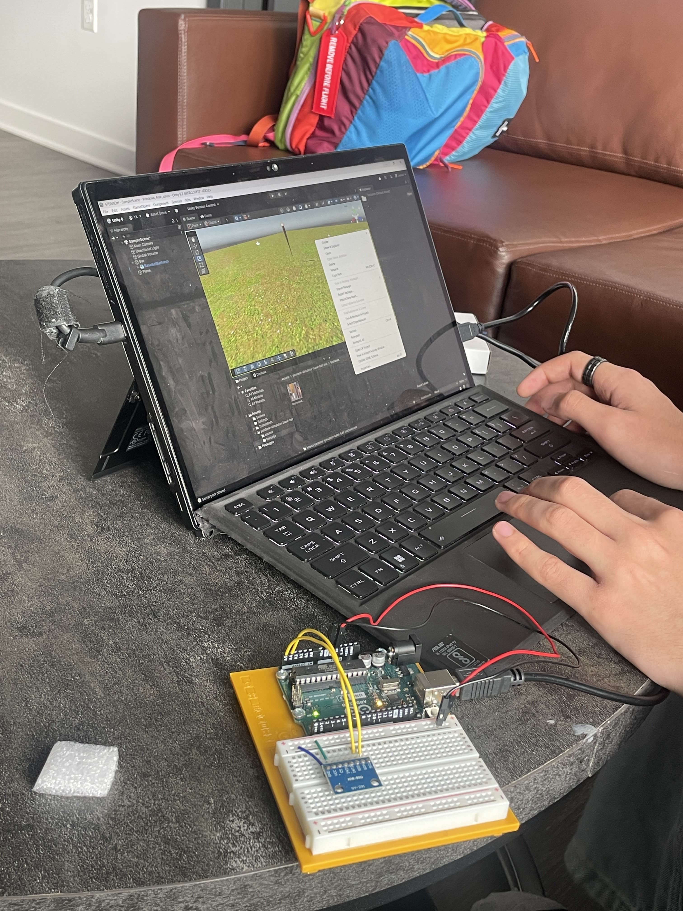
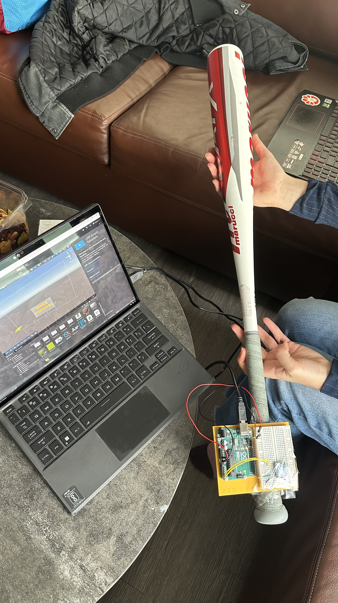
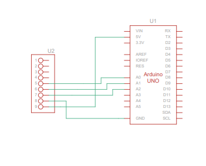
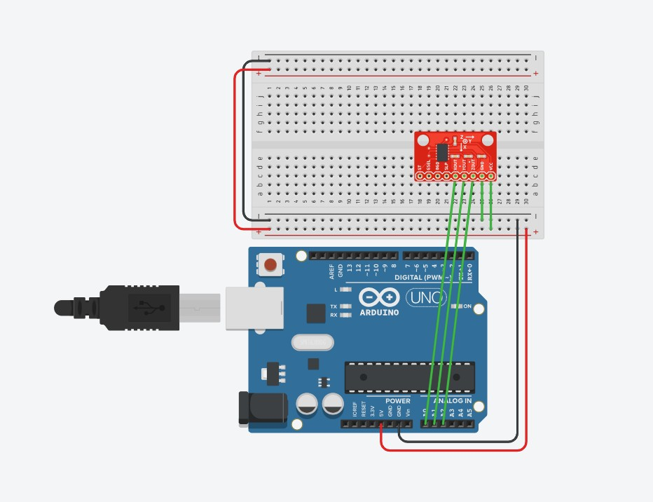

Arduino Project 2 - Alternative Controller Baseball Bat
IGME 470 w/ Dessa Shapiro
Building the Baseball Bat Controller
For our alternative controller project, we created a motion-controlled baseball bat that uses an accelerometer to detect swings and control a baseball game in Unity. The concept was simple: swing the bat in real life, and watch it swing in the game.
The idea was to have a handle that we could swing like a baseball bat with the required sensors inside. We used an Arduino board with an accelerometer sensor for positioning and acceleration data. Originally, we planned to incorporate a gyroscope as well, for more precise rotation tracking, but due to shipping delays, we had to work with just the accelerometer. Fortunately, the accelerometer alone proved capable of detecting most of the motion we needed, although it is a little choppier than we would have liked.
Construction Images



Once the hardware was assembled, we connected the Arduino to our computer via USB and began developing the Unity game. The game featured a simple baseball scenario where the player character would swing when detecting rapid acceleration changes from the bat. The arduino spends a few seconds at the start of the game calibrating its neutral positioning to use.
Research and Planning
Before construction, we researched existing alternative controller projects and motion-sensing technologies. We looked at how commercial motion controllers like the Nintendo Wii remote worked. The project idea had much inspiration from the Wii Sports games, where the controllers have tons of sensors in them to detect positioning data and motion precisely.
Project Pitch
Our initial plan included both an accelerometer (ADXL345) for detecting acceleration and a gyroscope for rotational data. The combination would have provided more accurate 3D motion tracking, allowing us to detect not just the speed and direction of swings, but also the angle and rotation of the bat. However, when the gyroscope didn't arrive in time, we pivoted to maximize what we could achieve with the accelerometer alone.
By monitoring acceleration on the X, Y, and Z axes, we could detect the sudden movement characteristic of a bat swing. The key was having the right amount of data smoothing and thresholds for proper bat positioning and swing detection.
Circuit Design

Parts used:
- 1x Arduino Uno
- 1x ADXL345 Accelerometer
- 1x Baseball Bat
- Jumper wires
- USB cable for serial communication
- Packaging tape
Successes and Challenges
What Went Well
The code worked well first try for the most part, which was a pleasant surprise. The accelerometer provided enough data for detecting swings, although it was a little choppier than if we had the gyroscope as well. We were able to set up serial communication between the Arduino and Unity without much trouble, using the Unity Serial Port library.
What Was Difficult
The biggest challenge was working without the gyroscope. While the accelerometer could detect when a swing occurred, it struggled to determine the direction or precise angle of the swing consistently. Since we didn't have exact rotation values from the gyroscope, we had to rely on just acceleration magnitude and some calculations to figure out the positioning of the bat in the game.
Another difficulty was using the right sensor library, as our initial code used a different library that didn't work with the accelerometer that we had purchased, requiring tweaks to the code.
Lastly, dealing with noisy sensor data required implementing smoothing algorithms. Raw accelerometer readings would sometimes spike unexpectedly, causing false swing detections and a really jank experience.
How It Works: Code Explanation
Arduino Code
The Arduino code reads data from the accelerometer sensor and sends it to the computer via serial communication. Here's how it works:
Click to view full Arduino code
/*
* Baseball Bat Controller - Arduino Script
* Uses ADXL345 3-Axis Accelerometer to track bat swing
* Sends rotation and acceleration data to Unity via Serial
*/
#include <Wire.h>
#include <Adafruit_ADXL345_U.h>
// Create ADXL345 object with unique ID
Adafruit_ADXL345_Unified accel = Adafruit_ADXL345_Unified(12345);
// Calibration offsets (will be set during startup)
float offsetX = 0;
float offsetY = 0;
float offsetZ = 0;
// Orientation angles (calculated from accelerometer)
float pitch = 0; // X rotation
float roll = 0; // Y rotation
// Previous accelerations for swing detection
float prevAccelMagnitude = 0;
float accelMagnitude = 0;
// Swing detection
float swingSpeed = 0;
const float SWING_THRESHOLD = 15.0; // m/s² - adjust based on testing
bool isSwinging = false;
// Timing
unsigned long lastTime = 0;
void setup() {
Serial.begin(115200);
// Initialize ADXL345
if(!accel.begin()) {
Serial.println("ADXL345 not detected!");
while(1);
}
// Set range to ±16g for baseball swings (high acceleration)
accel.setRange(ADXL345_RANGE_16_G);
Serial.println("ADXL345 connected");
// Calibrate - keep bat still during startup
Serial.println("Calibrating... Keep bat still and level");
delay(1000);
calibrateSensor();
Serial.println("Ready! Start swinging!");
lastTime = millis();
}
void calibrateSensor() {
float sumX = 0, sumY = 0, sumZ = 0;
int samples = 100;
for(int i = 0; i < samples; i++) {
sensors_event_t event;
accel.getEvent(&event);
sumX += event.acceleration.x;
sumY += event.acceleration.y;
sumZ += event.acceleration.z;
delay(10);
}
offsetX = sumX / samples;
offsetY = sumY / samples;
offsetZ = (sumZ / samples) - 9.81; // Subtract gravity
Serial.print("Offsets: ");
Serial.print(offsetX); Serial.print(", ");
Serial.print(offsetY); Serial.print(", ");
Serial.println(offsetZ);
}
void loop() {
// Calculate delta time
unsigned long currentTime = millis();
float deltaTime = (currentTime - lastTime) / 1000.0;
lastTime = currentTime;
// Get accelerometer event
sensors_event_t event;
accel.getEvent(&event);
// Apply calibration offsets
float accelX = event.acceleration.x - offsetX;
float accelY = event.acceleration.y - offsetY;
float accelZ = event.acceleration.z - offsetZ;
// Calculate orientation angles (tilt)
// Pitch (rotation around X-axis)
pitch = atan2(accelY, sqrt(accelX * accelX + accelZ * accelZ)) * 180.0 / PI;
// Roll (rotation around Y-axis)
roll = atan2(-accelX, accelZ) * 180.0 / PI;
// Calculate total acceleration magnitude (for swing detection)
prevAccelMagnitude = accelMagnitude;
accelMagnitude = sqrt(accelX * accelX + accelY * accelY + accelZ * accelZ);
// Calculate swing speed (rate of change of acceleration)
if(deltaTime > 0) {
swingSpeed = abs(accelMagnitude - prevAccelMagnitude) / deltaTime;
}
// Detect swing
isSwinging = (accelMagnitude > SWING_THRESHOLD) || (swingSpeed > 50.0);
// Send data to Unity
// Format: Pitch,Roll,Yaw,AccelMag,Speed,Swinging,RawX,RawY,RawZ
Serial.print(pitch);
Serial.print(",");
Serial.print(roll);
Serial.print(",");
Serial.print(0); // Yaw (can't determine from accelerometer alone)
Serial.print(",");
Serial.print(accelMagnitude);
Serial.print(",");
Serial.print(swingSpeed);
Serial.print(",");
Serial.print(isSwinging ? "1" : "0");
Serial.print(",");
Serial.print(accelX);
Serial.print(",");
Serial.print(accelY);
Serial.print(",");
Serial.println(accelZ);
delay(10); // ~100Hz update rate
}The code continuously reads the X, Y, and Z acceleration values from the ADXL345 sensor. It calculates the magnitude of acceleration. When this magnitude exceeds a predetermined threshold (indicating a sudden movement), the Arduino and Unity decide that it is considered a swing.
The code includes a calibration routine at startup that measures the resting position of the bat to establish baseline values. It then calculates pitch and roll angles to track the bat's orientation, along with swing speed and acceleration magnitude for detecting when a swing occurs.
Unity Code
On the Unity side, we created a script that listens to the serial port for incoming messages from the Arduino:
Click to view full Unity C# code
using UnityEngine;
using System.IO.Ports;
using System;
using System.Threading;
public class BaseballBatController : MonoBehaviour
{
[Header("Serial Communication")]
[Tooltip("COM port for Arduino (e.g., COM3 on Windows, /dev/ttyUSB0 on Linux)")]
public string portName = "COM3";
public int baudRate = 115200;
[Header("Bat Settings")]
[Tooltip("Smoothing factor for rotation (0-1, higher = smoother but more lag)")]
[Range(0f, 1f)]
public float smoothing = 0.15f;
[Tooltip("Multiplier for rotation sensitivity")]
public float rotationMultiplier = 2.5f;
[Tooltip("Multiplier for pitch (X-axis tilt)")]
public float pitchMultiplier = 1.0f;
[Tooltip("Multiplier for roll (Y-axis tilt)")]
public float rollMultiplier = 1.0f;
[Tooltip("Multiplier for yaw (Z-axis rotation)")]
public float yawMultiplier = 1.0f;
[Header("Swing Detection")]
public float accelerationThreshold = 15f;
public float niceSwingThreshold = 25f;
public bool isSwinging = false;
public float currentAcceleration = 0f;
public float swingSpeed = 0f;
[Header("Visual Feedback")]
public Material normalMaterial;
public Material swingingMaterial;
public TrailRenderer trailRenderer;
public SwingPopup swingPopup;
[Header("Debug")]
public bool showDebugInfo = true;
public Vector3 rawAcceleration = Vector3.zero;
// Private variables
private SerialPort serialPort;
private Thread serialThread;
private Vector3 targetRotation = Vector3.zero;
private Vector3 currentRotation = Vector3.zero;
private bool isConnected = false;
private bool isRunning = false;
private string latestData = "";
private readonly object dataLock = new object();
private Renderer batRenderer;
private float lastNiceSwingTime = -999f;
private readonly float niceSwingCooldown = 1.5f;
void Start()
{
// Get renderer for material changes
batRenderer = GetComponent<Renderer>();
if (batRenderer == null)
{
batRenderer = GetComponentInChildren<Renderer>();
}
// Setup trail renderer
if (trailRenderer != null)
{
trailRenderer.enabled = false;
}
// Connect to Arduino
ConnectToArduino();
}
void ConnectToArduino()
{
try
{
serialPort = new SerialPort(portName, baudRate);
serialPort.ReadTimeout = 100;
serialPort.Open();
isConnected = true;
isRunning = true;
// Start thread for reading serial data
serialThread = new Thread(ReadSerialData);
serialThread.IsBackground = true;
serialThread.Start();
Debug.Log("Connected to Arduino on " + portName);
}
catch (Exception e)
{
Debug.LogError("Could not open serial port: " + e.Message);
Debug.LogError("Make sure: 1) Arduino is plugged in, 2) Correct COM port, 3) API Compatibility is .NET Framework");
isConnected = false;
}
}
void ReadSerialData()
{
while (isRunning && serialPort != null && serialPort.IsOpen)
{
try
{
string data = serialPort.ReadLine();
lock (dataLock)
{
latestData = data;
}
}
catch (TimeoutException)
{
// Normal timeout, continue
}
catch (Exception e)
{
Debug.LogWarning("Serial read error: " + e.Message);
}
}
}
void Update()
{
if (!isConnected)
{
// Try to reconnect every 3 seconds
if (Time.frameCount % 180 == 0)
{
ConnectToArduino();
}
return;
}
// Get latest data from thread
string data;
lock (dataLock)
{
data = latestData;
latestData = "";
}
if (!string.IsNullOrEmpty(data))
{
ParseArduinoData(data);
}
// Apply rotation with smoothing
currentRotation = Vector3.Lerp(currentRotation, targetRotation, 1f - smoothing);
transform.rotation = Quaternion.Euler(currentRotation * rotationMultiplier);
// Update visual feedback
UpdateVisuals();
}
void ParseArduinoData(string data)
{
try
{
// Expected format: Pitch,Roll,Yaw,AccelMag,Speed,Swinging,RawX,RawY,RawZ
string[] values = data.Split(',');
if (values.Length >= 9)
{
float pitch = float.Parse(values[0]);
float roll = float.Parse(values[1]);
float yaw = float.Parse(values[2]);
currentAcceleration = float.Parse(values[3]);
swingSpeed = float.Parse(values[4]);
isSwinging = values[5].Trim() == "1";
// Raw acceleration values (for debugging)
rawAcceleration.x = float.Parse(values[6]);
rawAcceleration.y = float.Parse(values[7]);
rawAcceleration.z = float.Parse(values[8]);
// Update target rotation with individual axis multipliers
// Note: You may need to adjust these axes depending on how your ADXL345 is mounted
targetRotation = new Vector3(
pitch * pitchMultiplier,
roll * rollMultiplier,
yaw * yawMultiplier
);
if (showDebugInfo && Time.frameCount % 60 == 0) // Log every 60 frames
{
Debug.Log($"P:{pitch:F1} R:{roll:F1} | Accel:{currentAcceleration:F2} | Speed:{swingSpeed:F1} | Swing:{isSwinging}");
}
}
}
catch (Exception e)
{
Debug.LogWarning("Error parsing data: " + e.Message + " | Data: " + data);
}
}
void UpdateVisuals()
{
// Change material based on swing state
if (batRenderer != null)
{
if (isSwinging && swingingMaterial != null)
{
batRenderer.material = swingingMaterial;
}
else if (normalMaterial != null)
{
batRenderer.material = normalMaterial;
}
}
// Enable/disable trail
if (trailRenderer != null)
{
trailRenderer.enabled = isSwinging || currentAcceleration > accelerationThreshold;
}
// Check for "Nice Swing!" popup trigger
if (currentAcceleration > niceSwingThreshold &&
Time.time - lastNiceSwingTime > niceSwingCooldown)
{
if (swingPopup != null)
{
swingPopup.ShowPopup("Nice Swing!");
lastNiceSwingTime = Time.time;
}
}
}
void OnApplicationQuit()
{
CloseSerialPort();
}
void OnDisable()
{
CloseSerialPort();
}
void OnDestroy()
{
CloseSerialPort();
}
void CloseSerialPort()
{
isRunning = false;
if (serialThread != null && serialThread.IsAlive)
{
serialThread.Join(1000); // Wait up to 1 second
}
if (serialPort != null && serialPort.IsOpen)
{
serialPort.Close();
Debug.Log("Serial port closed");
}
}
void OnGUI()
{
if (!showDebugInfo) return;
GUIStyle style = new GUIStyle();
style.fontSize = 18;
style.normal.textColor = Color.white;
int y = 10;
GUI.Label(new Rect(10, y, 400, 25),
"Status: " + (isConnected ? "Connected" : "Disconnected"), style);
y += 30;
GUI.Label(new Rect(10, y, 400, 25),
$"Pitch: {currentRotation.x:F1}° | Roll: {currentRotation.y:F1}°", style);
y += 30;
GUI.Label(new Rect(10, y, 400, 25),
$"Acceleration: {currentAcceleration:F2} m/s²", style);
y += 30;
GUI.Label(new Rect(10, y, 400, 25),
$"Swing Speed: {swingSpeed:F1}", style);
y += 30;
GUI.Label(new Rect(10, y, 400, 25),
"Swinging: " + (isSwinging ? "YES" : "NO"), style);
y += 30;
GUI.Label(new Rect(10, y, 500, 25),
$"Raw Accel: X:{rawAcceleration.x:F2} Y:{rawAcceleration.y:F2} Z:{rawAcceleration.z:F2}", style);
}
}The Unity script opens a serial connection to the Arduino's COM port and continuously reads and parses incoming data. When it receives data, it parses the pitch, roll, acceleration magnitude, and swing speed values to control the in-game bat.
Data Flow
The complete system works as follows:
- Player swings the physical bat
- Accelerometer detects sudden acceleration change
- Arduino calculates acceleration magnitude
- If threshold is exceeded, Arduino sends "SWING" via serial
- Unity receives the message and triggers game events
- Player sees immediate feedback in the game